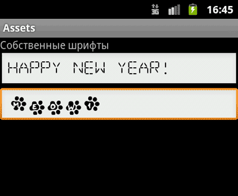

/* Моя кошка замечательно разбирается в программировании. Стоит мне объяснить проблему ей - и все становится ясно. */
John Robbins, Debugging Applications, Microsoft Press, 2000

/* Моя кошка замечательно разбирается в программировании. Стоит мне объяснить проблему ей - и все становится ясно. */
John Robbins, Debugging Applications, Microsoft Press, 2000
Чтение файлов
Используем собственные шрифты
Загрузка локальных файлов из активов в WebView
Получаем список файлов в папке assets
В Android имеется еще один каталог, в котором могут храниться файлы, предназначенные для включения в пакет - assets. Этот каталог находится на том же уровне, что и res. Для файлов, располагающихся в assets, в R.java не генерируются идентификаторы ресурсов. Для их считывания необходимо указать путь к файлу. Путь к файлу является относительным и начинается с /assets. Этот каталог, в отличие от подкаталога res, позволяет задавать произвольную глубину подкаталогов и произвольные имена файлов и подкаталогов.
Для доступа к файлам Assets используется класс AssetManager. Пример для чтения текстового файла:
String getStringFromAssetFile(Activity activity)
{
AssetManager am = activity.getAssets();
InputStream is = am.open("test.txt");
String s = convertStreamToString(is);
is.close();
return s;
}
Другой способ:
String text = filename;
byte[] buffer = null;
InputStream is;
try {
is = getAssets().open(text);
int size = is.available();
buffer = new byte[size];
is.read(buffer);
is.close();
} catch (IOException e) {
e.printStackTrace();
}
String str_data = new String(buffer);
return str_data;
Для доступа к графическому файлу из актива можно использовать следующий код:
public void loadImageFromAsset() {
try {
// получаем входной поток
InputStream ims = getAssets().open("cat.jpg");
// загружаем как Drawable
Drawable d = Drawable.createFromStream(ims, null);
// выводим картинку в ImageView
mImage.setImageDrawable(d);
}
catch(IOException ex) {
return;
}
}
Вы также можете загрузить изображение в Bitmap, используя BitmapFactory.decodeStream(), вместо Drawable.
Напишем практический пример создания приложения, в котором будут использоваться собственные шрифты, не входящие в стандартную библиотеку шрифтов Android. Для этого мы упакуем нужные шрифты вместе с приложением. Поместим в каталог assets/fonts файлы шрифтов (можно скачать бесплатные шрифты с сайтов ).
В файл разметки добавим пару текстовых полей с заготовленным текстом для вывода этого текста с нашим шрифтом.
В классе активности загрузим объект TextView из ресурсов, а затем создадим объект Typeface, используя вызов статического метода Typeface.createFromAsset(). Метод createFromAsset() принимает два параметра:
Например, загрузить шрифт для текстового поля Textview можно следующим способом:
@Override
public void onCreate(Bundle savedInstanceState) {
super.onCreate(savedInstanceState);
setContentView(R.layout.main);
final TextView textMyFont = (TextView)findViewById(R.id.editText1);
textMyFont.setTypeface(Typeface.createFromAsset(
getAssets(), "fonts/DigitalDream.ttf"));
final TextView textMyFont2 = (TextView)findViewById(R.id.editText2);
textMyFont2.setTypeface(Typeface.createFromAsset(getAssets(), "fonts/Catwalk.ttf"));
}
Запустив проект, мы увидим в текстовых полях надписи Happy New Year! и Meow!, выводимые нашими собственными шрифтами.

Если нужно загрузить локальные страницы и изображения из активов в WebView, то можно использовать префикс file://android_asset. Подробнее смотрите в статье про WebView.
myBrowser = (WebView)findViewById(R.id.mybrowser);
myBrowser.loadUrl("file:///android_asset/mypage.html");
Можно получить список файлов, которые находятся в папке assets. Для быстрой проверки кода я вручную скопировал в папку два файла:
AssetManager myAssetManager = getApplicationContext().getAssets();
try {
String[] Files = myAssetManager.list(""); // массив имен файлов
Toast.makeText(getApplicationContext(), Files[0] + ", " + Files[1],
Toast.LENGTH_LONG).show();
} catch (IOException e) {
// TODO Auto-generated catch block
e.printStackTrace();
}
Кроме ваших файлов, также возвращаются странные папки /images, /sounds, /webkit. Учитывайте это в своих проектах. Так как в папке можно создавать собственные подпапки, то можно воспользоваться вспомогательным методом:
void displayFiles(AssetManager mgr, String path) {
try {
String list[] = mgr.list(path);
if (list != null)
for (int i = 0; i < list.length; ++i) {
Log.v("Assets:", path + "/" + list[i]);
displayFiles(mgr, path + "/" + list[i]);
}
} catch (IOException e) {
Log.v("List error:", "can't list" + path);
}
}
// вызываем метод
public void onClick(View view) {
final AssetManager mgr = getAssets();
displayFiles(mgr, ""); // содержимое папки /assets, включая странные папки
displayFiles(mgr, "cats"); // содержимое подпапки /assets/cats
}
По сети гуляет информация, что существует ограничение в 1 Мб на размер файлов в папке assets. При превышении размера у вас может появиться ошибка:
Data exceeds UNCOMPRESS_DATA_MAX
Я не сталкивался, поэтому рецепт решения проблемы не предлагаю.
Если вас интересует, как использовать собственный шрифт в телефонах Windows Phone 7, то читайте статью День двадцать четвертый. Шрифты